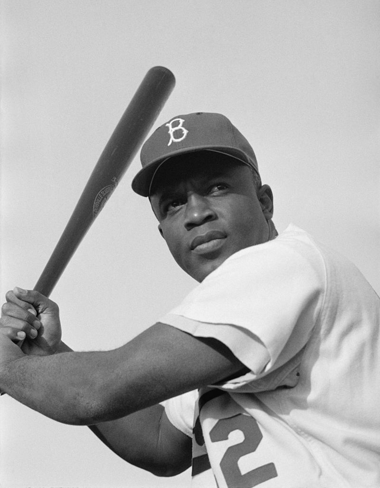
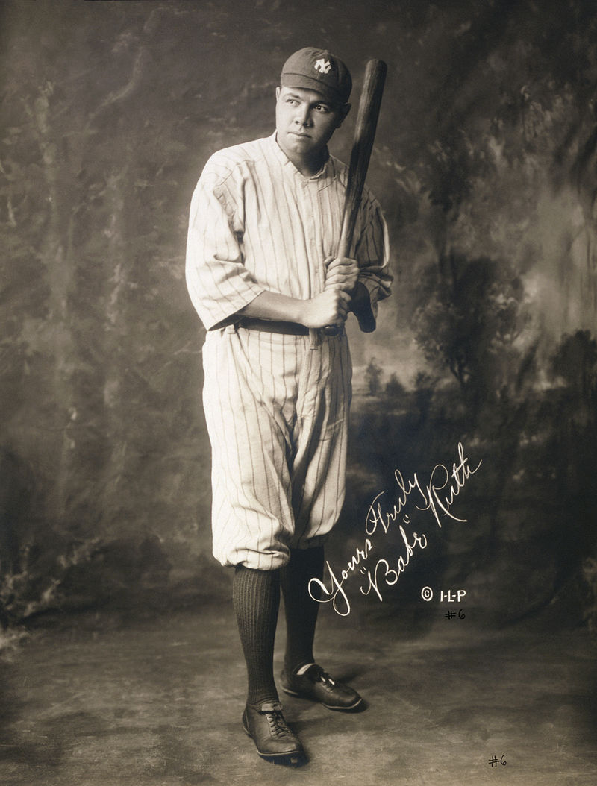
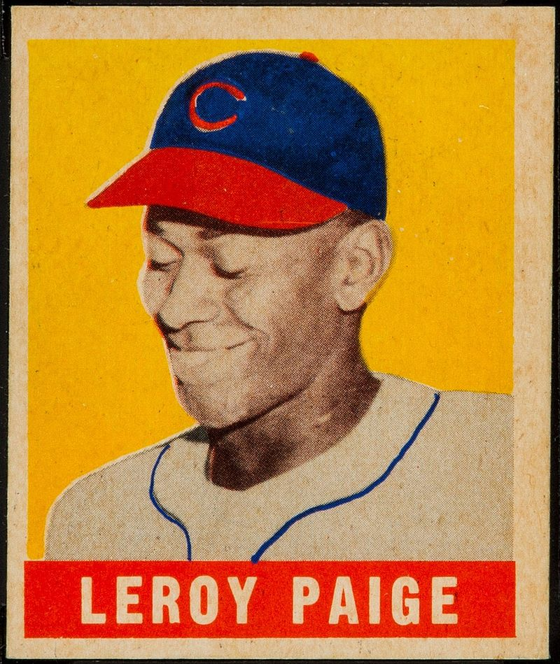

To be honest there is a ot of important people in baseball but there are some that changed the game. Like babe ruth, Jackie Robinson,Bill Veeck, Bill James, Joe Spear, Bud Selig, Kenesaw Mountain Landis, Marvin Miller, Ban Johnson, and Branch Rickey.
There are a lot of important people in the MLB but these are the people who changed the game in a way we cant imagine.
Jackie Robinson the first african American in Major Leauge Baseball player. Robinson broke the baseball color line when he started at first base for the Brooklyn Dodgers on April 15, 1947.[2] When the Dodgers signed Robinson, they heralded the end of racial segregation in professional baseball that had relegated black players to the Negro leagues since the 1880s. Robinson was inducted into the Baseball Hall of Fame in 1962.
During his 10-year MLB career, Robinson won the inaugural Rookie of the Year Award in 1947, was an All-Star for six consecutive seasons from 1949 through 1954, and won the National League Most Valuable Player Award in 1949—the first black player so honored.License: Public domain was an American professional baseball player whose career in Major League Baseball (MLB) spanned 22 seasons, from 1914 through 1935. Nicknamed "The Bambino" and "The Sultan of Swat", he began his MLB career as a star left-handed pitcher for the Boston Red Sox, but achieved his greatest fame as a slugging outfielder for the New York Yankees. Ruth established many MLB batting (and some pitching) records, including career home runs (714), runs batted in (RBIs) (2,213), bases on balls (2,062), slugging percentage (.690), and on-base plus slugging (OPS) (1.164); the last two still stand as of 2019. Ruth is regarded as one of the greatest sports heroes in American culture and is considered by many to be the greatest baseball player of all time. In 1936, Ruth was elected into the Baseball Hall of Fame as one of its "first five" inaugural members.License:Public domain
satchel paige was an American Negro league baseball and Major League Baseball (MLB) pitcher who is notable for his longevity in the game, and for attracting record crowds wherever he pitched. Paige was a right-handed pitcher, and at age 42 in 1948, was the oldest major league rookie while playing for the Cleveland Indians. He played with the St. Louis Browns until age 47, and represented them in the All-Star Game in 1952 and 1953. He was the first player who had played in the Negro leagues to pitch in the World Series, in 1948, and was the first electee of the Committee on Negro Baseball Leagues to be inducted into the National Baseball Hall of Fame, in 1971.License: public Domain